第八章 手榴弹制造法
1 概述
手榴弹是战争中具有较大威力的一种武器，可装备于正规部队，也可用于地方武装和民兵。它的构造简单，使用方便，攻击力强，是抗战时期大量消耗的弹药之一。
手榴弹的木柄、弹壳所用的材料，解放区到处都有，广大人民群众都能制造。当时木柄和弹壳等除专门工厂生产外，也分散由民间制造。所装配成的手榴弹，其数量之多，除满足正规部队需要外，解放区里有战斗能力的群众，都配备了手榴弹，做到了“人手有弹”，武装了抗战的军民。
2 手榴弹的构造
手榴弹是由弹柄、拉火装置和弹头三个主要部分组成。其构造如图 69 所示。
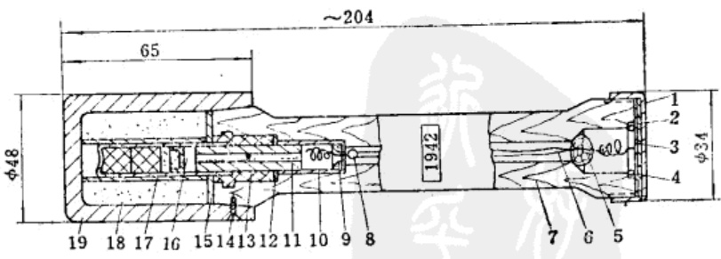
(一) 弹柄
弹柄部分是由木柄、保险盖、毡垫和纸垫组成。
-
木柄：采用松木、梨木、棠梨木和桦木等制造。它是做为抛掷弹头的手柄。
-
保险盖：又称防潮盖，材料为薄铁皮，外形与一般瓶盖相似，并有螺纹与木柄的螺纹相配合。它和毡垫、纸垫在一起，起运输、贮存和携带时的保险作用，也可防止潮湿空气和水份由弹柄端部侵入。为了加强防潮，有时也可放置两个毡垫。若无铁皮亦可用木盖。
(二) 拉火装置
拉火装置是由拉环、拉火线、拉火丝、拉火帽、缓燃线和雷管等组成。
-
拉环：拉环是一个金属环，可以用粗铁丝做成，也可以采用民间使用的各种金属环，如挂窗帘用的铜环或铁环等。其作用是固定拉火线。
-
拉火线：拉火线由质量较好的丝线或棉线作成，用于连接拉环和拉火线。
-
拉火帽与拉火丝：拉火帽与拉火丝构成拉火，起发火的作用。
-
缓燃线：缓燃线的作用是当拉火帽发火后，不会立即导致雷管爆炸，而使弹体命中目标后再爆炸。这需要一段延期时间，一般为3~4秒。
(三) 弹头
弹头由弹壳与炸药组成。爆炸时弹头破碎成破片，起杀伤作用。
3 木柄与弹壳制造
(一) 木柄制造
木柄是手榴弹的一个主要部件，要求木柄具有一定的尺寸(如图 70 所示)，外表要光滑，并有足够的防潮能力。最好是采用榫木、梨木等制造木柄。加工木柄的程序如下:
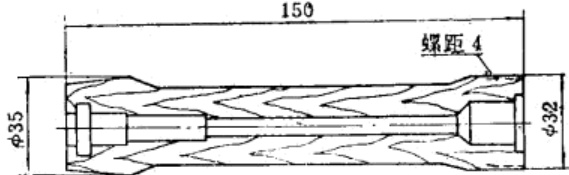
(1) 下料: 木材运来后，先锯成 $ 40^{+2}_{-1} $ 毫米的方木条(图 71 所示)，下料后的木条送去烘干。
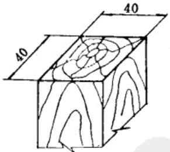
(2)烘干木材：要求木料湿度不大于10%。木条送入干燥室内，在温度70～100℃的条件下，烘干一周即可使用。
(3)木条切断：经干燥后的木条切成长度为 \(152_{-1.5}\) 毫米的木条(图 72 所示)。
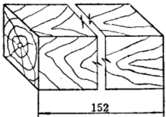
(4)木柄加工成型：经过干燥后的木条，按图 70 所示的尺寸，在专用的木工车床上刨平、挑丝扣、钻孔和开槽，或者用简易的木工工具进行木柄的成型加工。
(5)木柄浸蜡(炸蜡)：木柄浸蜡的目的是为了提高防潮能力。先将石蜡加入熔蜡锅内加热，温度达到130～140℃时用工具将木柄浸入蜡中，浸蜡时间为20～25分钟。取出后经冷却，除去外表面多余的石蜡，即为成品。用火直接加热石蜡时，容易引起火灾，最好是采用如图 73 所示的方法，即将蜡锅与加热炉灶的火门用墙隔开。加热时要不断地用温度计测定温度，蜡液的温度控制在 140℃ 内为宜。
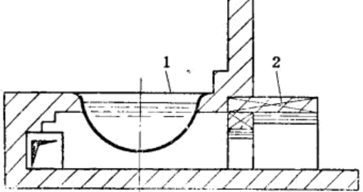
(二) 弹壳制造
手榴弹弹壳的材料主要是铸铁，但也使用过铁皮等。弹壳的形状，多是采用筒形壳体，要求外表无龟纹。弹壳的形状和尺寸如图 74 所示。抗战时期也生产过不少圆形弹壳，其形状如图 75 所示。
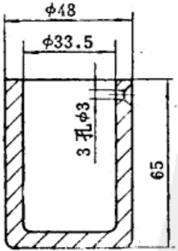
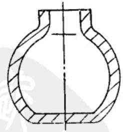
在抗战年代，手榴弹的需要量很大，由于处在战争环境，弹壳的铸造，是采用集中和分散并举，即除专门工厂利用小型的化铁炉铸造一部分外，更多的是利用民间的工厂和作坊，以简易的办法，铸造弹壳。
在战争年代，除充分利用各种条件铸造弹壳外。也采用过各种现成的铁皮盒子作弹壳，如方形的或圆形的铁盒子，略经修正，焊上一圈边缘就成为弹壳。虽然，铁皮弹壳的杀伤和破坏力不如铸铁的大，但也具有一定的尒伤效果。铁皮弹壳的手榴弹如图76所示。
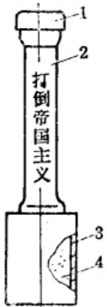
4 拉火装置制造
拉火装置是木柄手榴弹的发火和引爆机构，由拉火管(包括拉火帽、拉火丝和套管)、缓燃线、火雷管和套管组成。拉火装置的构造如图77所示。
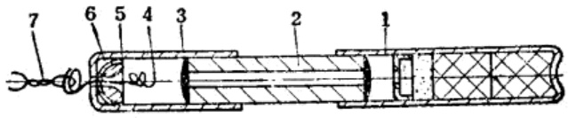
(一) 零件制造
-
拉火丝：拉火丝又称铜丝簧，材料为铜丝或铅丝，直径一般为0.6～0.8毫米。其加工程序如下：
-
铜丝切断：将铜丝或铅丝准备好，用剪刀截成长度为80～90毫米的线段。然后，用布擦净再用汽油洗去铜丝或铅丝表面上的污物、油脂，清理干净后即可送去轧齿。
-
铜丝轧齿：做为铜丝簧的铜丝或铅丝需要轧齿，以增大拉火时的摩擦力。用小链刀在木板上将铜丝轧成小齿，轧齿的长度为20～25毫米。轧齿后要除去油污，可用牙刷沾汽油将铜丝刷洗干净。
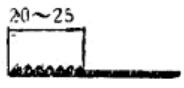
图78 轧齿 -
盘簧和磨尖：用手工将铜丝或铅丝盘成盘簧，并把端部在砂布上磨成1~2毫米长的小尖头。如图79所示。
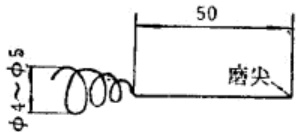
图79 盘簧 -
清洗：盘簧和磨尖后用汽油清洗。
-
沾玻璃粉：洗净后的铜丝簧沾上浓度为20%的虫胶漆(其中含有4~5%的细玻璃粉)，然后在室温条件下晾干4~6小时，送去与拉火帽合装。沾玻璃粉的铜丝簧如图 80 所示。
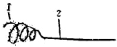
1—玻璃粉；2—铜丝簧。图80 沾玻璃粉
-
-
拉火帽：材料为0.6～0.8毫米厚的铜皮。用工具冲制成半圆形(如图81所示)，再在顶部钻一个直径为1.5～2毫米的孔，用汽油清洗即可装药。
-
拉火药制备：拉火药的成份为
氯酸钾 38% 硫化锖 23% 木炭粉 21% 雄黄(三硫化二砷) 10% 雷汞 8% 每个火帽中装拉火药仅 0.1 克，因用量较小，所以物料粉碎等工作均在乳钵中进行。
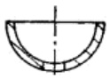
图81 拉火帽壳-
氯酸钾：在乳钵中粉碎后，用孔径0.17毫米的筛孔筛选，然后按上述比例称量好。
-
雄黄、硫化锑和木炭粉也分别准备好。
-
雷汞：使用干燥过的雷汞。
将上述物料分别准备妥当，按比例称量后，倒在一块干净的绸布上，用小橡皮耙子混合均匀。混合时要注意加料次序：首先将氯酸钾、硫化锑和木炭粉三种成分混合均匀，然后加入雄黄混合3～4分钟，最后加入雷汞，混合15～20分钟。
-
-
拉火帽装药：拉火帽装药有两种方法，一种是压药法(图 82 a)另一种是涂药法(见图 82 b)。
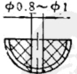
a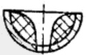
b图82 火帽装药-
压药法：将 0.1 克的拉火药，装入拉火帽壳体中，用手搬压力机或杠杆压力机压药。压药的压力不能超过 10 公斤/厘米 $ ^2 $。压药时在中心孔处予留 0.8～1 毫米的孔径，做为穿拉火丝用。
-
涂药法：采用涂药法时，先在拉火药中混入2~3%的虫胶漆，用小木签将药涂入拉火帽壳体中。涂完药后，在常温条件下经4~6小时晾干，即可送去使用。
-
-
(二) 拉火管装置
-
铜丝簧穿入拉火帽：将铜丝簧轻轻地穿入拉火帽的中心孔，并将铜丝簧的第一圈拉入拉火帽中。
-
拉火帽穿入套管：将拉火帽穿入纸的或金属(铜、铅)的套管中，就组成了拉火管(如图 83)。
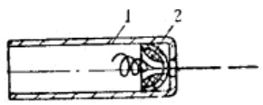
1—套管；2—拉火帽。图83 拉火管 -
拉火管盘环：目的是通过盘环使拉火帽固定于套管中，所盘成的环也供穿拉火线之用。盘环时要细心操作，盘环不少于三圈，并在顶部盘成一个双环(见图84所示)。
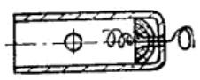
图84 盘环 -
套管：如套管为铜制，则需要在其管壁上钻2～3个直径为1.5～1毫米的排气孔(如图85所示)，以供拉火帽和缓燃线燃烧时，排出气体用。装入拉火帽时用纸(玻璃纸)把排气孔封上。准备好的拉火管送去与缓燃线和雷管合装。
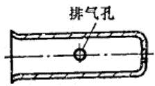
(三) 缓燃线
缓燃线的延期时间为3～4秒，当时所用的缓燃线约为6毫米(与雷管相配合)。药芯采用黑火药粉，缓燃线的燃烧速度为每秒钟10毫米。缓燃药的成分如下：
| 成分 | 比例 |
|---|---|
| 木炭粉 | 9.5～10% |
| 硝酸钾 | 76～77% |
| 硫磺粉 | 14.5～15% |
缓燃线的制法：用一个外径为6毫米和内径为3.5毫米的纸管，里面装入上述成分的缓燃药粉。装入时要用金属棒把药粉轻轻地压紧。制好的缓燃线经过燃速测定合格后，按规定长度切断，每一段长度为30～35毫米，燃烧时间控制在3～4秒钟。或者按规定长度装填缓燃药粉亦可。
为了易于点燃，在缓燃线的端部涂上一点黑火药粉，药量不易过多(不超过0.05克)，过多时则影响延期时间。缓燃线如图86所示。
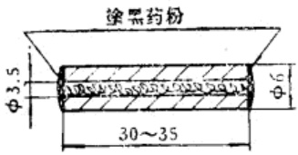
(四) 拉火装置合装
拉火装置合装：将拉火管、缓燃线和火雷管合装在一起并拴上拉火线。拉火装置合装顺序如图87所示。
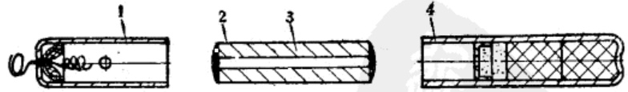
首先准备好拉火管，将缓燃纤端部涂上浓度为40～45%的虫胶漆，然后把缓燃纤插入拉火管，插入的深度为5～7毫米。如缓燃纤直径太小，不能与套管紧密配合，可在两端缠以纸条，以达到紧密的配合。
装好拉火装置后，在铜(或铅)丝簧的环上拴上拉火线，拴拉火线要牢固，不能用力向外拉动拉火线。拴拉火线要结成死结(如图89所示)。
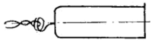
拉火线拴好之后，将缓燃线的另一端也涂上浓度为 40～45% 的虫胶漆，然后插入雷管。缓燃线插入的深度以比雷管的加强帽高 2～3 毫米为准，不得接觔到加强帽。装配拉火装置的次序不能颠倒。
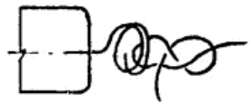
装配好的拉火装置，在室温条件下干燥4～6小时，即可送去全弹装配。
5 弹壳装药
抗战时期，手榴弹中曾装过梯恩梯、苦味酸、周氏炸药和硝铵炸药，也曾装过黑火药。梯恩梯和苦味酸是由战场上缴获的，周氏炸药、硝铵炸药和黑火药等，解放区能够大量制造。但黑药威力较小，因而大部分的手榴弹装填的是周氏炸药。
装药的方法是采用散装。每个手榴弹壳体内装周氏炸药 35～38 克，装黑药则为 40～42 克。装药数量的多少，与炸药的种类、弹壳的材料和厚度有关。例如同是铸铁弹壳，批与批的质量也不完全一致，需经破片试验决定。如装药量过少，则破片较大，数量少，破片的散布面也小；如装药量大，则破片数量多，但是破片小，杀伤力不够。
-
弹壳准备：弹壳在装药前，用小刷子把弹壳内壁刷干净。在内壁(药室)涂上浓度为20～35%的虫胶漆或滥青。自然干燥3～4小时，在壳内装入一个用纸制成的中心管，用以防止因散装的炸药震动撞击雷管，使整个拉火装置受到影响。
-
装药：将炸药称量好，用小勺沿弹壳的中心管外壁四周，均匀地把炸药装入弹壳中，并用小木棒压平和压紧。不要把炸药误装入中心管内。装完药后盖上一个有中心孔的薄纸垫，然后用布把弹壳的四周擦净，即可以送去合装。弹壳装药次序见图90所示。
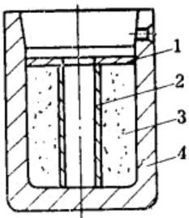
6 圣弹装配
全弹装配分为两个步骤进行，即拉火装置装入木柄和带拉火装置的木柄与弹头合装。
(一) 拉火装置装入木柄
拉火装置装入木柄内并固定好，就组成了带有拉火装置的木柄(如图 91 所示)。
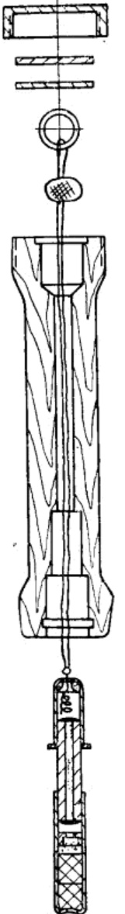
装配时先将木柄和拉火装置等准备好，在拉火管上套上纸垫，再用小钩针把拉火线轻轻地穿过木柄。穿拉火线时用手托住雷管的底部，向木柄中安装(不能用力拉动拉火线)，然后将拉火线固定在拉环上(这时雷管底部应向上放着)，再进行底部灌硫磺，以固定拉火和木柄。
硫磺加热到 120～130℃ 时，用小勺将硫磺注入木柄和雷管的空隙处。灌硫磺要分 3～4 次进行，灌到与木柄端部平齐为止(如图 92 所示)。
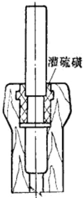
硫磺注完冷却后，在拉火的一端塞入棉花球或纸球，盖上纸垫和防潮垫，再将外表面清理干净后，就可送去全弹压合。
在拉火装入木柄时，若不慎拉动了拉火线，而使火帽发火，当发现有发烟现象时，应立即停止操作，将拉火和木柄一起迅速投到室外无人的地点，或投入事先准备好的防爆设备中去，以免爆炸时伤人。
(二) 成弹合装
成弹合装是将带有拉火的木柄和弹头合装在一起成为成品。
已准备好的木柄(带有拉火)插入弹头口部，少许涂上一层沥青(不涂也可)，然后装配，装配时一手扶弹壳，另一手拿木柄，先将雷管对准弹壳中的中心纸管，轻轻的将木柄装入弹壳，然后用手扳压力机将木柄压到位(事先测定好严虚压入的高度)，压合时要慢慢地压下，不能用力过猛。压完后，将木柄与壳体结合处所拚出的多余沥青清除掉。
为了使弹头与木柄牢固的结合，在壳体螺钉孔的部位旋入三个木螺钉(120°一个)，以螺丝刀拧入(抗战时期也曾较大量地用过钉鞋的钉子。钉子应事先准备好，长度要合乎要求，不得过长，以能深入到木柄壁厚的1/3处即可)。然后在防潮盖的内螺纹上涂一层油或凡士林，将其拧在木柄上。为了防止弹壳生锈，可将弹头部分沾上沥青，沥青干燥后即为成品(如图93所示)。成品经检验合格后，即可供部队使用。
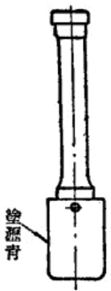
7 手榴弹试验方法
抗战时期对手榴弹的试验，是进行弹尧破片试验和成品检验。
(一) 弹壳破片试验
弹壳破片试验的目的，在于测定每一批弹壳的强度及装药量是否合适。破片试验后检查破片的数量，当时以破片数量在50片(每片约重1克)以上为合格。
试验方法：每一批弹壳中抽取 0.3%，装好炸药并在弹壳的上部装上一个带有雷管孔的木塞。试验时，选择一块坡度较大的地段，利用土坡挖一个坑，在坑的四周用石头砌好，坑的底部堑上砂土，装上一个用木板或厚纸板作的支撑，使中央形成一个空间。用一个小木板把弹壳支住，在弹壳内装入雷管和缓燃线，再在外套的四周填好砂土，上部盖好盖板。试验所用的缓燃线，燃烧速度最好控制在 0.5～1 厘米/分钟。
试验的弹体如图 94 所示。
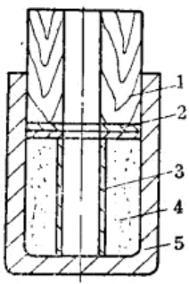
破片试验装置如图 95 所示。
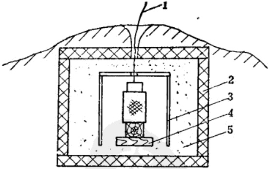
按照图 95 上所示装置，操作人员点火后立即离开。弹壳爆炸后，应将石板内的砂子全部过筛，收集破片，检查破片的数量。
在试验中，若点火后发现有瞎火现象时，不要立即检查，待20 分钟后再进行处理。试验所用的砂子最好采用干的，因为砂子湿度影响缓燃线的燃烧。点火后操作人员应离开试验地点十米以外观察。
(二) 成品安全性试验
安全性试验的目的，是测定手榴弹成品对运输或震动的安全性。安全合格的产品，才能供给使用。不安全的手榴弹不准出厂。
试验方法是将手榴弹从 3 米高处垂直落下，掉在水泥地或石板上，以不爆炸为合格。
每一批中抽出十发，将手榴弹顶部用一个小细绳拴好(图96)，隔着一个较厚的墙(厚为500毫米以上)投下，不要用力向下投掷，只靠物体的自重落下，'以观察其是否爆炸。
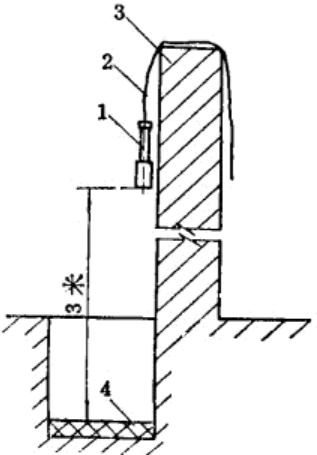
(三) 发火性试验
发火性试验的目的是检验手榴弹在命中目标时是否立即爆炸，以达到杀伤和破坏的效果。
发火性试验的方法是进行实弹投掷，投弹时先拧下防潮盖，取出防潮垫，用手指拉动铁环，拉出拉火丝(这时火帽起火并点燃缓燃线)，立即向指定方向投出。视其是否爆炸，爆炸者即为合格。
在实弹投掷时，如发现拒爆现象，不要立即检查，以免由于受潮等原因使缓燃剂的燃速减慢检查时发生危险，一般应间隔半小时后进行检查处理。